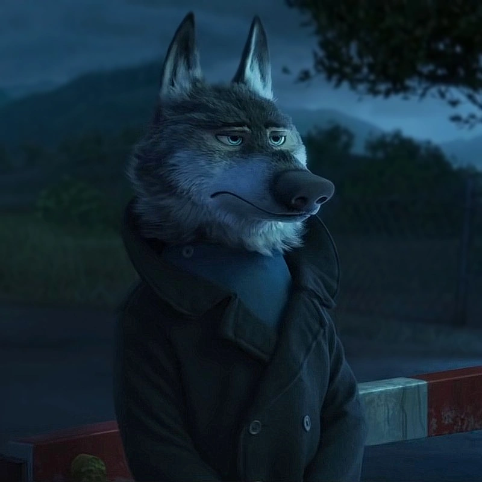
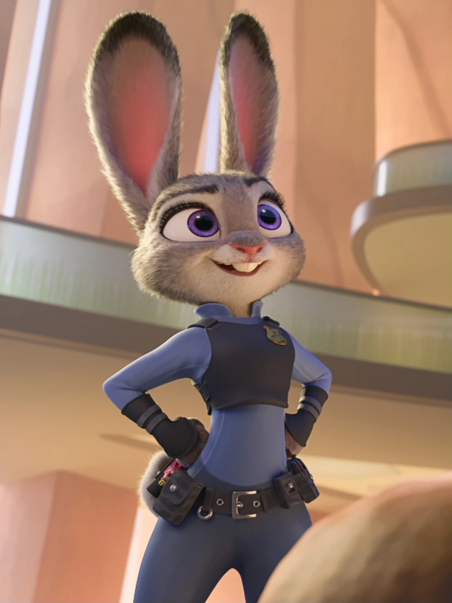
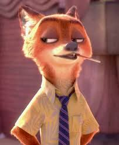
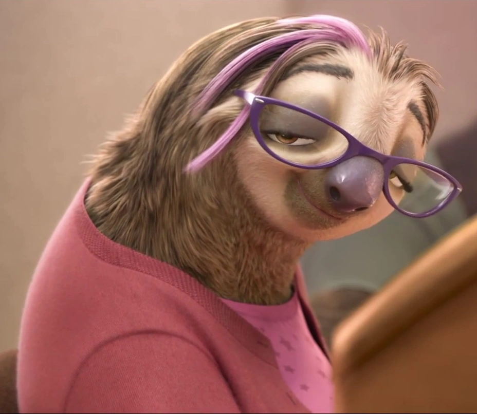

L'Équipe
Quatre profils complémentaires. Un seul objectif : rendre la triche économiquement non viable pour les studios qui nous font confiance.

Maël
Directeur Général & CTOCo-fondateur d'Obscurus, Maël s'occupe à la fois de la direction de l'entreprise et du pilotage technique. Passionné par le fonctionnement interne de Windows depuis ses débuts, il a fondé Obscurus en 2023 avec une idée simple : les anticheats classiques ne regardent pas au bon endroit. Il reste personnellement impliqué dans les choix d'architecture et valide chaque driver avant déploiement.

Anna
Responsable Sécurité OffensiveLe rôle d'Anna, c'est de trouver les failles avant les cheaters. Elle teste nos propres défenses, reproduit les méthodes d'attaque réelles et traduit ses découvertes en protections concrètes. Chaque vulnérabilité qu'elle identifie devient une amélioration du produit. C'est elle qui garantit qu'Obscurus reste en avance sur les nouvelles méthodes de triche.

Joan
Conseiller Commercial & CommunicationJoan est le lien entre l'équipe technique et les studios clients. Il accompagne chaque client de la première discussion jusqu'au déploiement en production, en parlant aussi bien le langage des devs que celui des équipes business. Il gère aussi la communication d'Obscurus et coordonne les réponses en cas d'incident signalé.

Camille
Directrice RH & ComptabilitéCamille s'occupe de tout ce qui fait fonctionner l'entreprise en coulisses : recrutement de profils rares, gestion financière, suivi des revenus clients et dossiers administratifs. C'est elle qui veille à ce que l'équipe ait les ressources et la stabilité nécessaires pour se concentrer sur le produit.